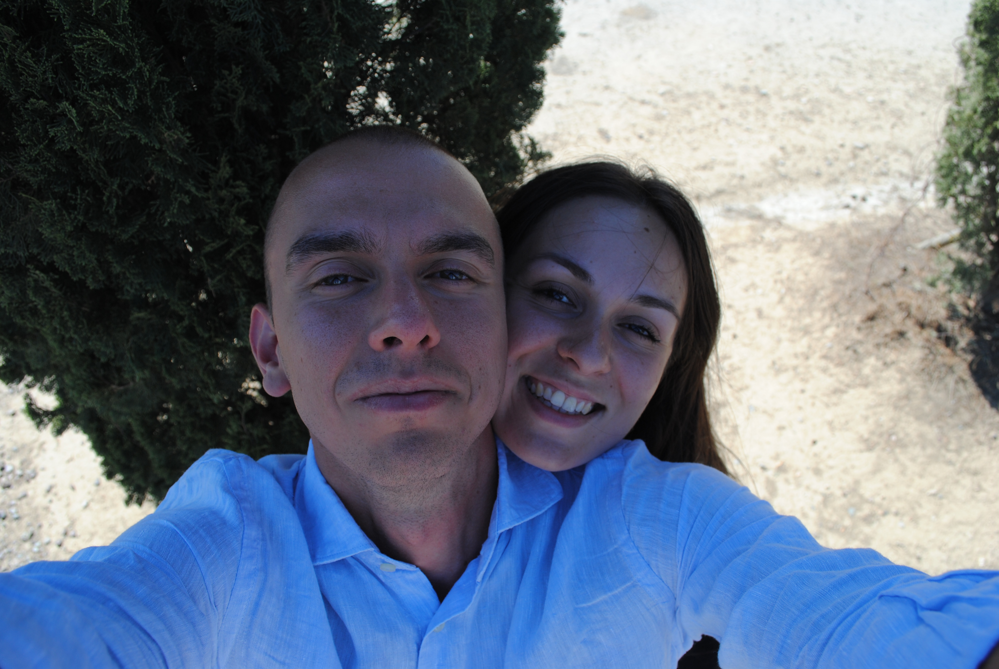
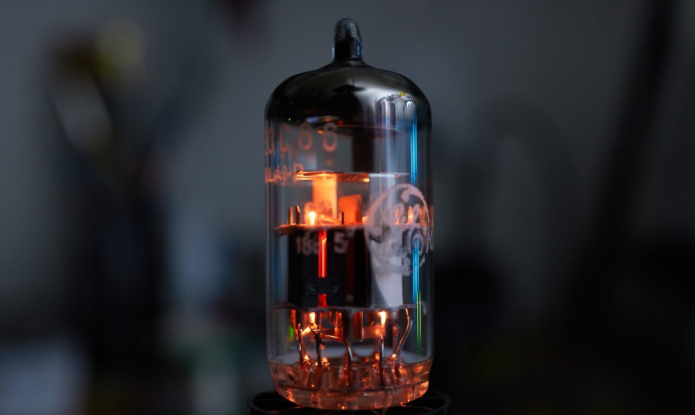

Intro

I excelled academically, graduating with top honors (110/110 cum laude) from Università di Roma "La Sapienza" with Bachelor's and Master's degrees in Mathematicsand a strong background in physics.
Outside academia, I thrived as a Software Developer Engineer at NTT Data, gaining expertise in Microsoft technologies.
Passionate about machine learning and AI, I obtained certifications from Coursera, Duke University, and Stanford University. I developed expertise in machine learning and NLP through specialized courses.
I made significant contributions as an AI researcher at Università di Pisa and an intern at AI Technologies s.r.l.
With proficiency in several programming languages and familiarity with a range of libraries and tools, I am equipped to tackle complex projects. I am fluent in Italian, have a B2 level of English proficiency, and possess basic knowledge of French.
Overall, my academic and non-academic achievements demonstrate my dedication to excellence and my ability to bring expertise to any role.
download CV
Work
Some years ago, I have built a C program which can solve the Hanoi’s towers problem. This problem consists in having 3 “towers” and n disks of different size in the first tower, with the bigger disk at the bottom and the smaller at the top. The aim is to move all of them from the first tower to the third one, moving only one disk at time and without putting a disk on a smaller one.
I have also developed a C program which can play “tris” by using brute force, calculating all the possibilities and choosing the best one.
In my recent works, I'm developing ML algorithms in the field of NLP.
I have implemented some NER algorithms, one using Bidirectional LSTM plus CRF and another one using BERT.
Now I'm working with LLMs (Llama, Alpaca, Vicuna, etc.) and evaluating them using NLG metrics (BLEU, METEOR, ROUGE) for the specific task of data-to-text.
About

I am a passionate DIY enthusiast with a diverse range of interests.
In the realm of electronics, I love creating both vacuum tube and solid-state amplifiers, as well as other electronic devices.
When it comes to woodworking, I enjoy exploring various techniques and have successfully restored vintage motorcycles and bicycles.
Additionally, I have been playing jazz guitar for 13 years, with three of those years spent at the esteemed Saint Louis College of Music.
With a natural curiosity and strong problem-solving abilities, I thrive in both practical and theoretical pursuits.
Contact